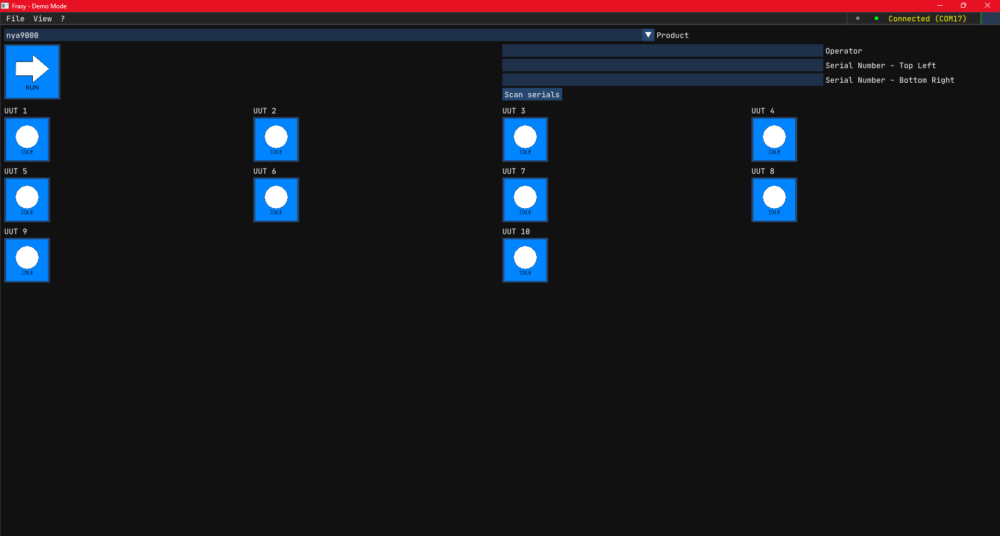

Frasy¶
Frasy is a Windows desktop application for automated PCBA (Printed Circuit Board Assembly) testing. It combines a C++ host process for UI, hardware communication, and test orchestration with a Lua scripting layer where all test logic lives — allowing test engineers to write and iterate on test sequences without recompiling the application.

Quick Example¶
Sequence("Power On", function()
Test("Check Supply Voltage", function()
local daq = Context.map.ibs.daq --[[@as DAQ]]
local v = daq:MeasureVoltage(Context.values.route._24VDC) -- Reads the voltage on a testpoint
Expect(v.average, "Supply Voltage"):ToBeInPercentage(24, 1.0) -- Asserts the value read
end)
end)
Key Features¶
- Descriptive test scripting — write what a board should do, not how to check it
- Multi-UUT support — test multiple boards in parallel with built-in synchronization
- CANopen hardware integration — communicate with instrumentation boards over SLCAN
- Live UI panels — log viewer, result viewer, statistical analyzer, CANopen object dictionary browser
- Hash-verified scripts — integrity checking on all Lua files before execution
- Test report generation — export results in JSON, Markdown, Key-Value, or PDF format
Documentation Sections¶
- Getting Started — Install, build, and run the demo
- Architecture — How Frasy is structured
- Developer Guide — Customize and extend the template
- Lua Reference — Complete Lua scripting API
- Panels — Built-in UI panels reference